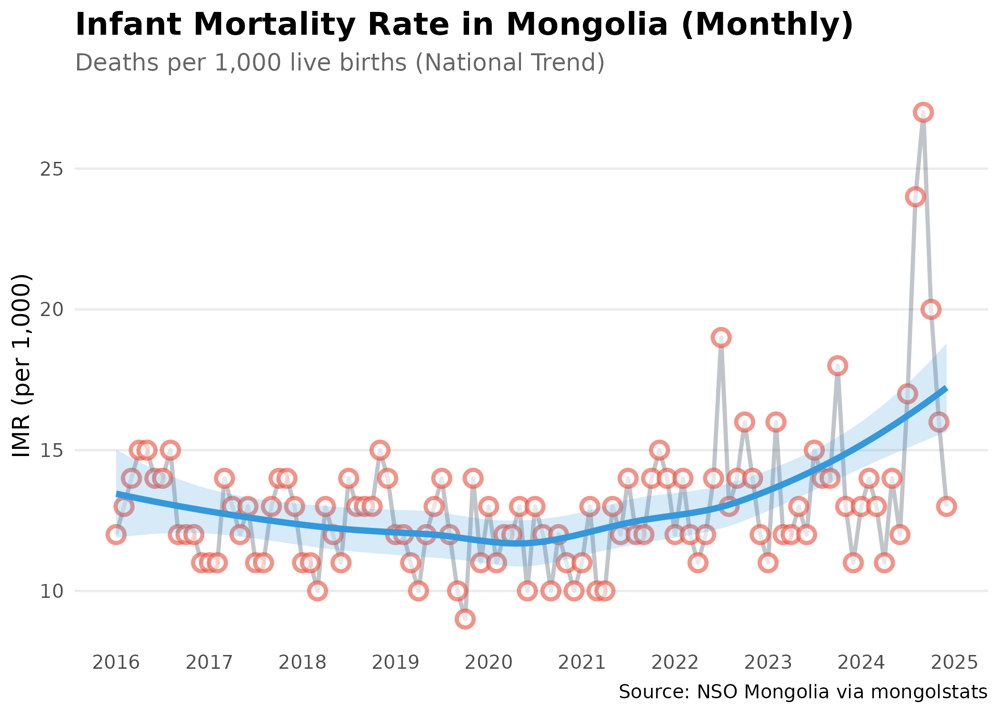
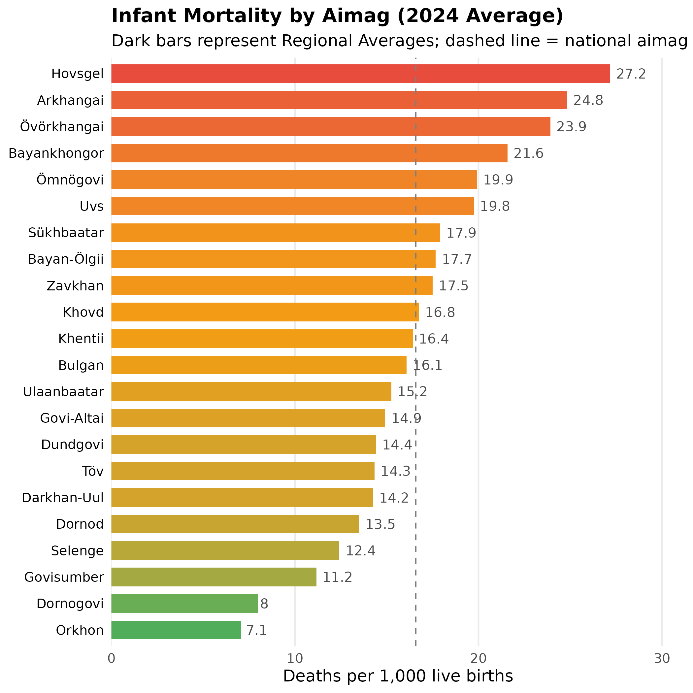
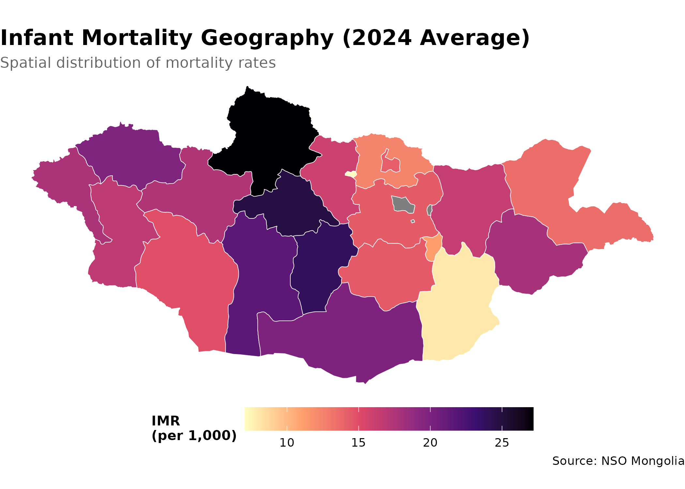

Installation
Install from GitHub:
# install.packages("devtools")
# devtools::install_github("temuulene/mongolstats")Your First Analysis: Infant Mortality Trends
Let’s walk through a complete workflow using infant mortality data—a key indicator of population health and health system performance.
Step 1: Load Packages
library(mongolstats)
library(dplyr)
library(ggplot2)
# Set language to English for readable output
nso_options(mongolstats.lang = "en")
# Set global ggplot2 theme with proper margins to prevent text cutoff
theme_set(
theme_minimal(base_size = 11) +
theme(
plot.margin = margin(10, 10, 10, 10),
plot.title = element_text(size = 13, face = "bold"),
plot.subtitle = element_text(size = 10, color = "grey40"),
legend.text = element_text(size = 9),
legend.title = element_text(size = 10)
)
)Step 2: Find the Right Table
Search for infant mortality data:
# Search by keyword
mortality_tables <- nso_itms_search("infant mortality")
mortality_tables |>
select(tbl_id, tbl_eng_nm) |>
head(5)
#> # A tibble: 5 × 2
#> tbl_id tbl_eng_nm
#> <chr> <chr>
#> 1 DT_NSO_2100_014V1 NUMBER OF INFANT MORTALITY, aimags and the Capital and by m…
#> 2 DT_NSO_2100_014V2 INFANT MORTALITY RATE, per 1000 live births, aimags and the…
#> 3 DT_NSO_2100_014V4 INFANT MORTALITY, by sex, by soum, and by year
#> 4 DT_NSO_2100_014V5 INFANT MORTALITY RATE, per 1000 live births, by sex, by so…
#> 5 DT_NSO_2100_015V1 INFANT MORTALITY RATE, per 1000 live births, aimags and the…We’ll use DT_NSO_2100_015V1 - Infant Mortality Rate per
1,000 live births (Monthly).
Step 3: Explore Table Metadata
Before fetching data, check what dimensions are available:
# View table structure
meta <- nso_table_meta("DT_NSO_2100_015V1")
meta
#> # A tibble: 2 × 5
#> dim code is_time n_values codes
#> <chr> <chr> <lgl> <int> <list>
#> 1 Region Бүс FALSE 28 <tibble [28 × 3]>
#> 2 Month Сар FALSE 119 <tibble [119 × 3]>
# Check available months
time_vals <- nso_dim_values("DT_NSO_2100_015V1", "Month", labels = "en")
head(time_vals, 10)
#> # A tibble: 10 × 2
#> code label_en
#> <chr> <chr>
#> 1 0 2025-11
#> 2 1 2025-10
#> 3 2 2025-09
#> 4 3 2025-08
#> 5 4 2016-01
#> 6 5 2016-02
#> 7 6 2016-03
#> 8 7 2016-04
#> 9 8 2016-05
#> 10 9 2016-06Step 4: Fetch Data
Get national infant mortality rates for the past two decades:
# Get all month codes
months <- nso_dim_values("DT_NSO_2100_015V1", "Month", labels = "en")
imr_national <- nso_data(
tbl_id = "DT_NSO_2100_015V1",
selections = list(
"Region" = "0", # National level
"Month" = months$code
),
labels = "en" # Get English labels
)
# Preview
imr_national |>
head(10)
#> # A tibble: 10 × 5
#> Region Month value Region_en Month_en
#> <chr> <chr> <dbl> <chr> <chr>
#> 1 0 0 13 Total 2025-11
#> 2 0 1 11 Total 2025-10
#> 3 0 2 14 Total 2025-09
#> 4 0 3 16 Total 2025-08
#> 5 0 4 12 Total 2016-01
#> 6 0 5 13 Total 2016-02
#> 7 0 6 14 Total 2016-03
#> 8 0 7 15 Total 2016-04
#> 9 0 8 15 Total 2016-05
#> 10 0 9 14 Total 2016-06Step 5: Visualize the Trend
Create a publication-ready plot:
# Prepare the data for visualization
# Step 1: Convert month strings to proper dates for time series plotting
# Step 2: Filter to recent decade (2015-2024) for clear trend visibility
p <- imr_national |>
mutate(date = as.Date(paste0(Month_en, "-01"))) |> # convert "YYYY-MM" string to Date
filter(date >= as.Date("2015-01-01") & date <= as.Date("2024-12-31")) |>
ggplot(aes(x = date, y = value, group = 1)) +
geom_line(color = "#2c3e50", linewidth = 1, alpha = 0.3) + # dim raw data so trend stands out
geom_point(color = "#e74c3c", size = 3, shape = 21, fill = "white", stroke = 1.5, alpha = 0.6) +
geom_smooth(method = "loess", se = TRUE, color = "#3498db", fill = "#3498db", alpha = 0.2, linewidth = 1.5) + # LOESS reveals trend through monthly noise
scale_x_date(date_breaks = "1 year", date_labels = "%Y") +
labs(
title = "Infant Mortality Rate in Mongolia (Monthly)",
subtitle = "Deaths per 1,000 live births (National Trend)",
x = NULL,
y = "IMR (per 1,000)",
caption = "Source: NSO Mongolia via mongolstats"
) +
theme_minimal(base_size = 12) +
theme(
plot.title = element_text(face = "bold", size = 16),
plot.subtitle = element_text(color = "grey40"),
panel.grid.minor = element_blank(),
panel.grid.major.x = element_blank() # vertical gridlines clutter time series
)
p # print static ggplot
Regional Comparison
Compare infant mortality across different regions:
# Get all aimags for most recent year (2024)
# We'll take the average of monthly rates
months_2024 <- months |>
filter(grepl("2024", label_en)) |>
pull(code)
# Fetch IMR data for all regions in 2024
# We'll calculate the annual average from monthly data
imr_regional <- nso_data(
tbl_id = "DT_NSO_2100_015V1",
selections = list(
"Region" = nso_dim_values("DT_NSO_2100_015V1", "Region")$code,
"Month" = months_2024
),
labels = "en"
) |>
filter(nchar(Region) == 3) |> # Keep only Aimags and Ulaanbaatar (code length = 3)
mutate(
Region_en = trimws(Region_en),
# Standardize region names to match geographic boundary data
Region_en = dplyr::case_match(
Region_en,
"Bayan-Ulgii" ~ "Bayan-Ölgii",
"Uvurkhangai" ~ "Övörkhangai",
"Khuvsgul" ~ "Hovsgel",
"Umnugovi" ~ "Ömnögovi",
"Tuv" ~ "Töv",
"Sukhbaatar" ~ "Sükhbaatar",
.default = Region_en
),
Type = ifelse(Region %in% c("1", "2", "3", "4"), "Region", "Aimag")
) |>
# Calculate annual average IMR from monthly data
group_by(Region_en, Type) |>
summarise(value = mean(value, na.rm = TRUE), .groups = "drop")
# Top 10 highest IMR regions
imr_regional |>
arrange(desc(value)) |>
select(Region_en, value) |>
head(10)
#> # A tibble: 10 × 2
#> Region_en value
#> <chr> <dbl>
#> 1 Hovsgel 27.2
#> 2 Arkhangai 24.8
#> 3 Övörkhangai 23.9
#> 4 Bayankhongor 21.6
#> 5 Ömnögovi 19.9
#> 6 Uvs 19.8
#> 7 Sükhbaatar 17.9
#> 8 Bayan-Ölgii 17.7
#> 9 Zavkhan 17.5
#> 10 Khovd 16.8Visualize Regional Disparities
# Calculate national aimag average for reference line
aimag_mean <- mean(imr_regional$value[imr_regional$Type == "Aimag"], na.rm = TRUE)
p <- imr_regional |>
filter(!is.na(value)) |>
arrange(desc(value)) |>
mutate(Region_en = forcats::fct_reorder(Region_en, value)) |> # order bars by value, not alphabet
ggplot(aes(x = value, y = Region_en)) +
# Aimags get gradient fill to show relative severity
geom_col(data = ~ subset(., Type == "Aimag"), aes(fill = value), width = 0.7) +
# Regions (aggregates) get distinct dark color to differentiate
geom_col(data = ~ subset(., Type == "Region"), fill = "#2c3e50", width = 0.7) +
geom_text(aes(label = round(value, 1)), hjust = -0.2, color = "grey30", size = 3.5) + # inline labels replace tooltips
scale_fill_gradient2(
low = "#27ae60", # green = low mortality (good)
mid = "#f39c12", # yellow = average
high = "#e74c3c", # red = high mortality (concerning)
midpoint = aimag_mean
) +
geom_vline(xintercept = aimag_mean, linetype = "dashed", color = "grey50", linewidth = 0.5) + # national average reference
scale_x_continuous(expand = expansion(mult = c(0, 0.15))) + # extra space for labels
labs(
title = "Infant Mortality by Aimag (2024 Average)",
subtitle = "Dark bars represent Regional Averages; dashed line = national aimag average",
x = "Deaths per 1,000 live births",
y = NULL
) +
theme_minimal(base_size = 12) +
theme(
plot.title = element_text(face = "bold", size = 14),
panel.grid.major.y = element_blank(), # horizontal gridlines clutter bar charts
panel.grid.minor = element_blank(),
axis.text.y = element_text(color = "black"),
legend.position = "none" # gradient is self-explanatory
)
p # print static ggplot
Adding Geographic Context
Combine with mapping for spatial analysis:
library(sf)
# Graceful degradation if external API is unreachable
# CRAN policy and CI robustness require handling network failures
try({
# Get aimag boundaries
aimags <- mn_boundaries(level = "ADM1")
# Join IMR data to map
imr_map <- aimags |>
left_join(imr_regional, by = c("shapeName" = "Region_en"))
# Create choropleth map
p <- imr_map |>
ggplot() +
geom_sf(aes(fill = value), color = "white", size = 0.2) +
scale_fill_viridis_c(
option = "magma",
direction = -1, # dark = high values (high mortality), light = low
name = "IMR\n(per 1,000)",
labels = scales::label_number()
) +
labs(
title = "Infant Mortality Geography (2024 Average)",
subtitle = "Spatial distribution of mortality rates",
caption = "Source: NSO Mongolia"
) +
theme_void() + # remove axes for cleaner map appearance
theme(
plot.title = element_text(face = "bold", size = 16),
plot.subtitle = element_text(color = "grey40"),
legend.position = "bottom", # bottom legend maximizes map width
legend.title = element_text(size = 10, face = "bold"),
legend.key.width = unit(1.5, "cm") # wider legend key for continuous scale
)
print(p) # print static ggplot
}, silent = TRUE)
Key Functions Summary
| Function | Purpose | Example |
|---|---|---|
nso_itms_search() |
Find tables by keyword | nso_itms_search("mortality") |
nso_table_meta() |
Get table dimensions | nso_table_meta("DT_NSO_...") |
nso_dim_values() |
List dimension values | nso_dim_values(tbl, "Region") |
nso_table_periods() |
Check time coverage | nso_table_periods(tbl) |
nso_data() |
Fetch data | nso_data(tbl, selections, labels) |
mn_boundaries() |
Get geographic boundaries | mn_boundaries(level = "ADM1") |
Best Practices
-
Always use labels: Set
labels = "en"innso_data()for readable output -
Check metadata first: Use
nso_table_meta()to understand dimensions before fetching -
Use appropriate selections: Specify dimensions by
their English labels (e.g.,
"Total"not"0") -
Filter carefully: Exclude total rows (usually code
"0") when analyzing subgroups -
Clean labels: Use
trimws()to remove leading/trailing spaces from region names before joining
Next Steps
- Discover More Data: See the Discovery Guide for advanced search techniques
-
Create Maps: Learn spatial analysis in the Mapping Guide
- Reference: Browse all functions in the Reference